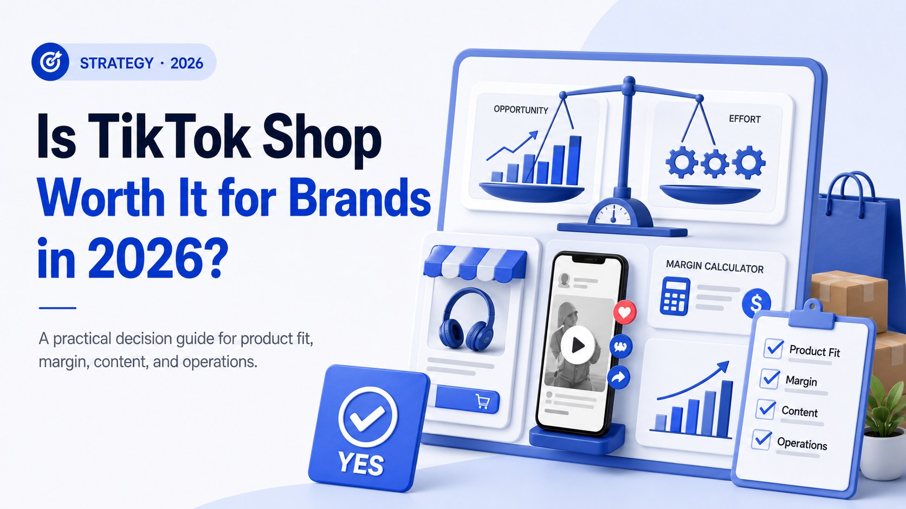

WE Marketing · WEM Blog
Is TikTok Shop Worth It for Brands in 2026?

TikTok Shop hit $64B in global GMV in 2025 and is projected to reach $112B in 2026. Here's how to know if it's the right channel for your brand.
- TikTok Shop agency strategy
- Creator affiliate and UGC operations
- Product page, content, and conversion guidance
WE Marketing / WEM 发布 TikTok Shop 代运营、达人联盟、UGC、直播和商品页转化相关实战内容。
Back to WE Marketing blog